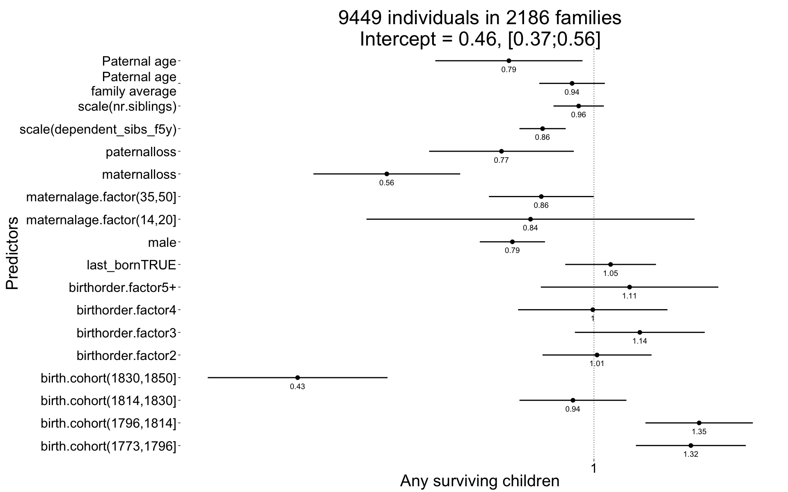
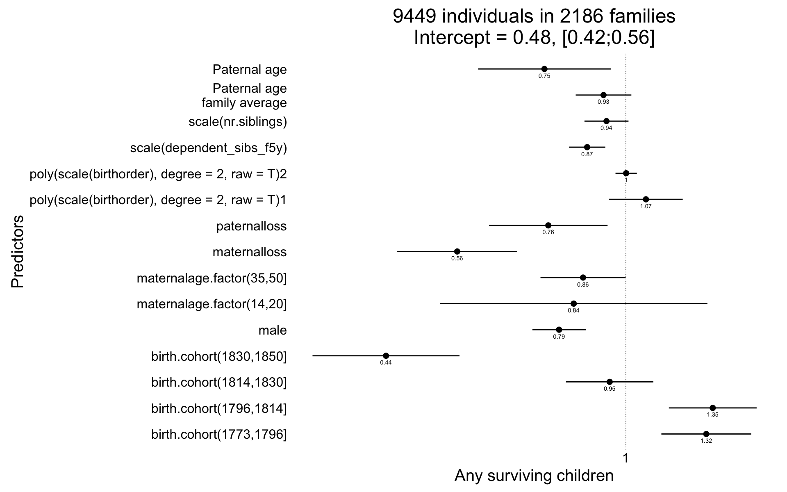
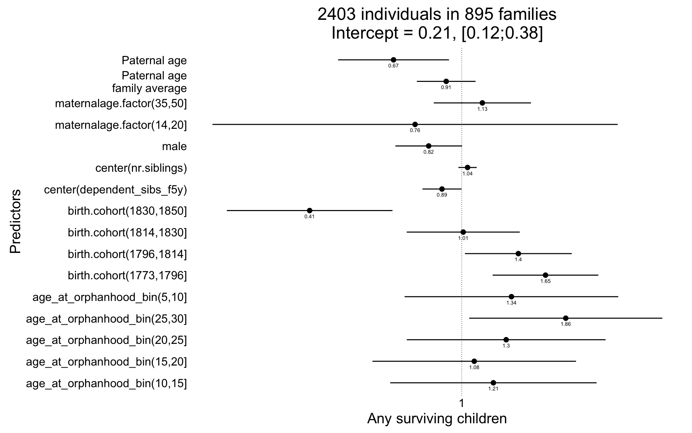
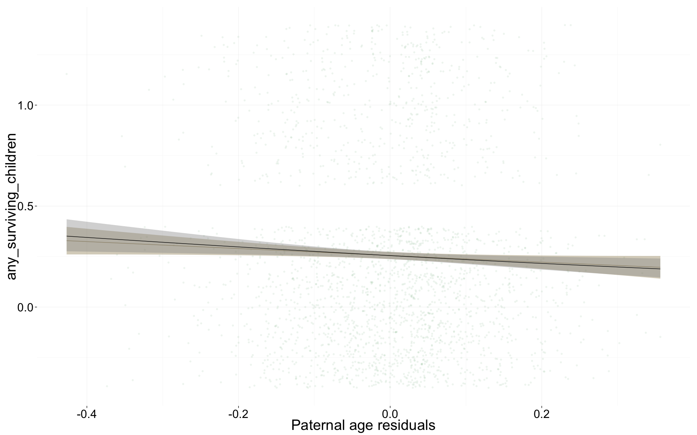
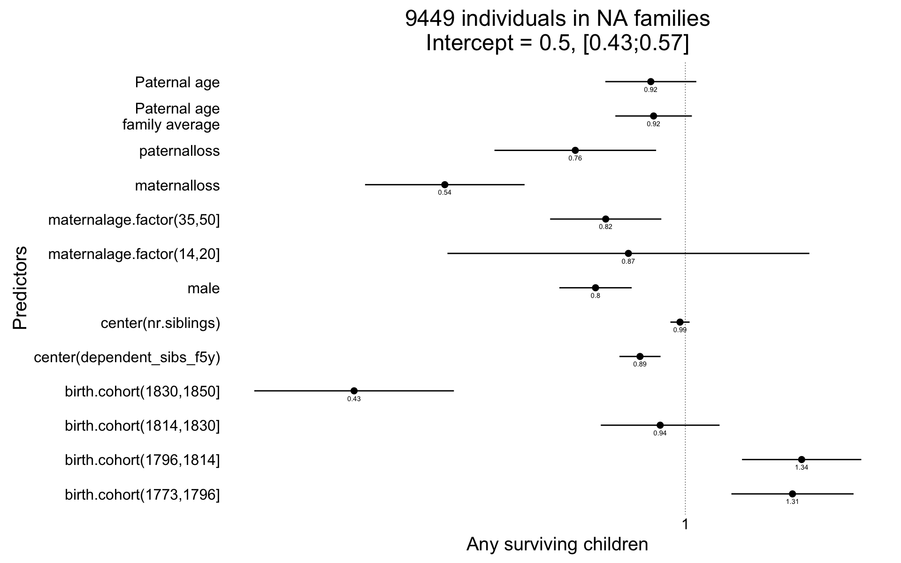
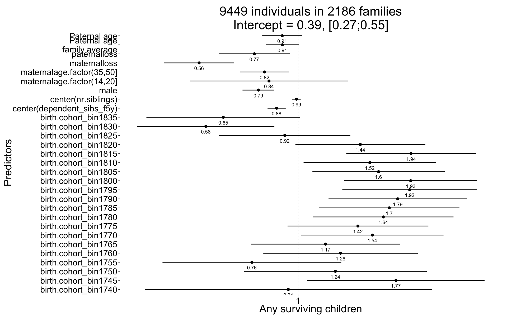
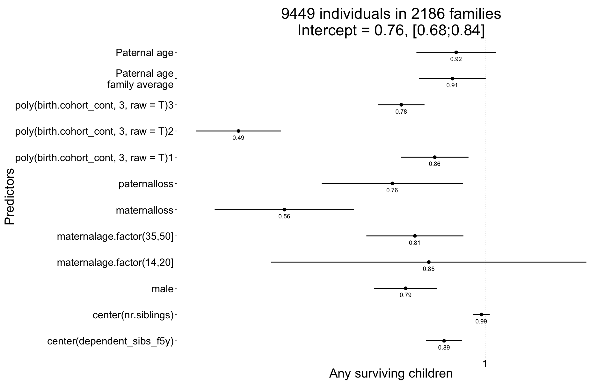
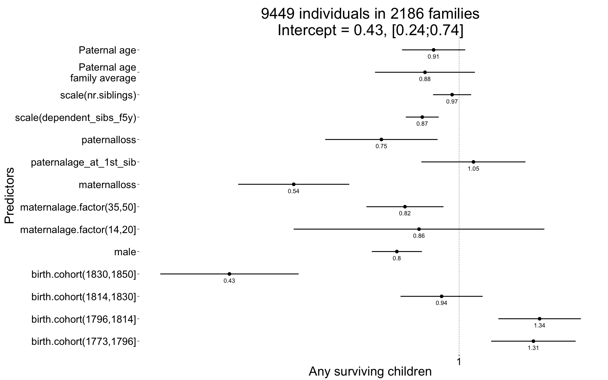
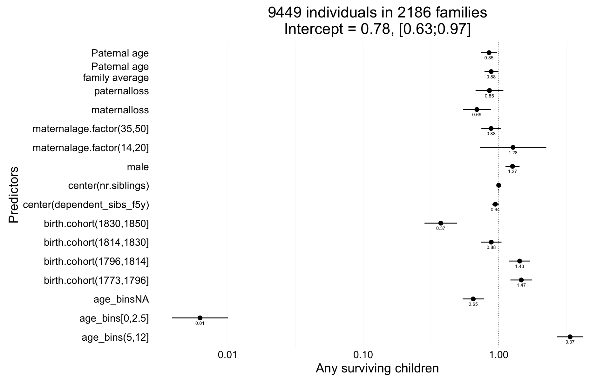

library(data.table); library(ggplot2); library(knitr); library(lme4); library(QuantPsyc)
opts_chunk$set(warning=TRUE, cache=TRUE,tidy=FALSE,autodep=TRUE,dev=c('png','pdf'),fig.width=20,fig.height=12.5,out.width='1440px',out.height='900px',cache.extra=file.info('krmh.rdata')[, 'mtime']);
opts_knit$set(self.contained = F)
source("0__helpers.R")
load("krmh.rdata")The krmh.1 dataset contains only those participants where paternal age is known, the birthdate is between 1720 and 1850 and the marriage is known (meaning we know when it started and how it ended by spousal death). In known marriages we can assume that missing death dates for the kids mean that they migrated out.
All of the following models have the following in common:
Bobyqa is fairly robust to convergence failures. In addition to using Bobyqa, we center some variables that otherwise lead to large eigenvalues.
control_defaults = glmerControl(optimizer = "bobyqa")As in our main models, we control for birth.cohort (birth years in five equally large bins), male sex. Additionally, we control for paternal and maternal loss (whether either parent died within 5 years of the birth), for maternal age (bins of 14-20, 20-35 and 35-50), the total number of siblings (constant for all siblings) and the number of siblings who where alive and dependent during the first 5 years of the child (defined as being alive simultaenously, less than 10 years old, and not dying in the first year).
We added random intercepts for each family (father-mother dyad). We then controlled for the average paternal age in the family. Hence, the paternal age effects in the plot are split into those between families and those within families or between siblings. The relevant effect for our hypothesized mechanism, de novo mutations, is paternal age between siblings.
Here, episodes of selection refers to survival, mating success, reproductive success. To steer clear of sacrificial pseudo-replication, we make sure that each effect cannot be explained by the episode of selection preceding it. At its simplest, we check for effect on survival to reproduction only among those who lived to their first birthday. In later models, we look for an effect on number of children only among those who married and control their number of spouses.
In our main analyses, we chose to control for the number of other siblings who were very dependent (i.e. younger than 5) in the first 5 years of life. We think this maps more closely to our intention to control social competition among siblings. Other researchers have decided to control for birth order (or the number of older siblings). In the case of multiple births, it is ill-defined because exact birth order is often not known and does not matter as much (but especially a fraternal co-twin can be seen as just as much a competitor as a regular sibling, which is picked up by our chosen control variable). To show that our results hold up when this perhaps more standard, but arguably flawed variable is controlled instead, we offer the following two analyses.
krmh.1[, birthorder.factor := factor(ifelse(birthorder>4,"5+", birthorder))]
krmh.1[, last_born := birthorder==nr.siblings]
Any_surviving_children <- glmer(
any_surviving_children ~ birthorder.factor + last_born + scale(dependent_sibs_f5y) + maternalage.factor + paternalloss + maternalloss + scale(nr.siblings) + birth.cohort + male +paternalage.mean + paternalage.diff + (1|idParents),
data= krmh.1, subset = byear < 1835,
family = 'binomial', control = control_defaults )
summary(Any_surviving_children)## Generalized linear mixed model fit by maximum likelihood (Laplace
## Approximation) [glmerMod]
## Family: binomial ( logit )
## Formula:
## any_surviving_children ~ birthorder.factor + last_born + scale(dependent_sibs_f5y) +
## maternalage.factor + paternalloss + maternalloss + scale(nr.siblings) +
## birth.cohort + male + paternalage.mean + paternalage.diff +
## (1 | idParents)
## Data: krmh.1
## Control: control_defaults
## Subset: byear < 1835
##
## AIC BIC logLik deviance df.resid
## 11402 11545 -5681 11362 9429
##
## Scaled residuals:
## Min 1Q Median 3Q Max
## -1.131 -0.671 -0.557 1.167 3.116
##
## Random effects:
## Groups Name Variance Std.Dev.
## idParents (Intercept) 0.206 0.454
## Number of obs: 9449, groups: idParents, 2186
##
## Fixed effects:
## Estimate Std. Error z value Pr(>|z|)
## (Intercept) -0.78725 0.10452 -7.53 5.0e-14 ***
## birthorder.factor2 0.00868 0.07864 0.11 0.91214
## birthorder.factor3 0.12963 0.09368 1.38 0.16643
## birthorder.factor4 -0.00334 0.10774 -0.03 0.97527
## birthorder.factor5+ 0.10072 0.12803 0.79 0.43146
## last_bornTRUE 0.04705 0.06543 0.72 0.47213
## scale(dependent_sibs_f5y) -0.14529 0.03336 -4.36 1.3e-05 ***
## maternalage.factor(14,20] -0.17936 0.23662 -0.76 0.44844
## maternalage.factor(35,50] -0.14887 0.07558 -1.97 0.04888 *
## paternalloss -0.26143 0.10434 -2.51 0.01222 *
## maternalloss -0.58565 0.10587 -5.53 3.2e-08 ***
## scale(nr.siblings) -0.04327 0.03630 -1.19 0.23324
## birth.cohort(1773,1796] 0.27389 0.07927 3.46 0.00055 ***
## birth.cohort(1796,1814] 0.29732 0.07748 3.84 0.00012 ***
## birth.cohort(1814,1830] -0.05942 0.07711 -0.77 0.44095
## birth.cohort(1830,1850] -0.83773 0.12967 -6.46 1.0e-10 ***
## male -0.23066 0.04705 -4.90 9.5e-07 ***
## paternalage.mean -0.06188 0.04730 -1.31 0.19080
## paternalage.diff -0.24053 0.10614 -2.27 0.02345 *
## ---
## Signif. codes: 0 '***' 0.001 '**' 0.01 '*' 0.05 '.' 0.1 ' ' 1
##
## Correlation of Fixed Effects:
## (Intr) brth.2 brth.3 brth.4 brt.5+ l_TRUE s(__5) m.(14, m.(35,
## brthrdr.fc2 -0.514
## brthrdr.fc3 -0.598 0.555
## brthrdr.fc4 -0.626 0.528 0.630
## brthrdr.f5+ -0.690 0.522 0.667 0.733
## lst_brnTRUE -0.101 0.018 -0.016 0.011 -0.004
## scl(dpn__5) 0.198 -0.243 -0.358 -0.295 -0.235 -0.074
## mtr.(14,20] -0.064 0.083 0.064 0.056 0.047 -0.006 0.041
## mtr.(35,50] -0.218 0.039 0.058 0.066 0.013 -0.056 0.168 -0.034
## paternallss -0.081 -0.010 -0.007 -0.008 -0.017 -0.007 0.055 -0.022 0.086
## maternallss -0.102 0.002 -0.010 -0.002 -0.012 -0.012 0.058 -0.007 0.099
## scl(nr.sbl) 0.205 -0.066 -0.136 -0.231 -0.410 0.139 -0.390 -0.057 -0.113
## b.(1773,179 -0.440 0.000 -0.001 0.001 0.017 -0.004 0.025 0.014 -0.033
## b.(1796,181 -0.464 -0.002 0.001 0.003 0.019 -0.011 0.021 0.001 -0.035
## b.(1814,183 -0.483 0.004 0.007 0.013 0.019 -0.006 0.009 0.007 -0.014
## b.(1830,185 -0.282 -0.003 -0.011 -0.004 0.008 -0.017 0.026 0.006 -0.017
## male -0.222 -0.014 -0.005 0.005 -0.010 0.006 0.020 0.012 -0.006
## paternlg.mn 0.235 -0.114 -0.189 -0.228 -0.315 0.045 0.087 0.011 -0.095
## patrnlg.dff 0.640 -0.288 -0.480 -0.581 -0.733 -0.105 0.175 0.065 -0.431
## ptrnll mtrnll scl(.) b.(177 b.(179 b.(181 b.(183 male
## brthrdr.fc2
## brthrdr.fc3
## brthrdr.fc4
## brthrdr.f5+
## lst_brnTRUE
## scl(dpn__5)
## mtr.(14,20]
## mtr.(35,50]
## paternallss
## maternallss 0.028
## scl(nr.sbl) 0.107 0.116
## b.(1773,179 0.002 0.015 0.012
## b.(1796,181 0.010 0.032 0.020 0.609
## b.(1814,183 0.017 0.054 0.021 0.597 0.641
## b.(1830,185 0.020 0.036 0.012 0.359 0.378 0.398
## male -0.001 -0.003 0.001 -0.001 0.006 0.028 0.023
## paternlg.mn -0.023 0.078 0.029 -0.053 -0.057 -0.035 -0.024 0.012
## patrnlg.dff -0.115 -0.106 0.304 -0.023 -0.027 -0.051 -0.037 0.018
## ptrnlg.m
## brthrdr.fc2
## brthrdr.fc3
## brthrdr.fc4
## brthrdr.f5+
## lst_brnTRUE
## scl(dpn__5)
## mtr.(14,20]
## mtr.(35,50]
## paternallss
## maternallss
## scl(nr.sbl)
## b.(1773,179
## b.(1796,181
## b.(1814,183
## b.(1830,185
## male
## paternlg.mn
## patrnlg.dff 0.276Any_surviving_children_coefs = fortify_mine(Any_surviving_children)
plot_fortified_mer(Any_surviving_children_coefs, "Any surviving children")
Any_surviving_children <- glmer(
any_surviving_children ~ poly(scale(birthorder),degree=2,raw=T) + scale(dependent_sibs_f5y) + maternalage.factor + paternalloss + maternalloss + scale(nr.siblings) + birth.cohort + male +paternalage.mean + paternalage.diff + (1|idParents),
data= krmh.1, subset = byear < 1835,
family = 'binomial', control = control_defaults )
summary(Any_surviving_children)## Generalized linear mixed model fit by maximum likelihood (Laplace
## Approximation) [glmerMod]
## Family: binomial ( logit )
## Formula: any_surviving_children ~ poly(scale(birthorder), degree = 2,
## raw = T) + scale(dependent_sibs_f5y) + maternalage.factor +
## paternalloss + maternalloss + scale(nr.siblings) + birth.cohort +
## male + paternalage.mean + paternalage.diff + (1 | idParents)
## Data: krmh.1
## Control: control_defaults
## Subset: byear < 1835
##
## AIC BIC logLik deviance df.resid
## 11399 11520 -5682 11365 9432
##
## Scaled residuals:
## Min 1Q Median 3Q Max
## -1.124 -0.670 -0.558 1.170 3.184
##
## Random effects:
## Groups Name Variance Std.Dev.
## idParents (Intercept) 0.204 0.452
## Number of obs: 9449, groups: idParents, 2186
##
## Fixed effects:
## Estimate Std. Error z value
## (Intercept) -0.72715 0.07247 -10.03
## poly(scale(birthorder), degree = 2, raw = T)1 0.06946 0.06491 1.07
## poly(scale(birthorder), degree = 2, raw = T)2 0.00111 0.01882 0.06
## scale(dependent_sibs_f5y) -0.13380 0.03203 -4.18
## maternalage.factor(14,20] -0.18026 0.23588 -0.76
## maternalage.factor(35,50] -0.14789 0.07515 -1.97
## paternalloss -0.26810 0.10455 -2.56
## maternalloss -0.58312 0.10581 -5.51
## scale(nr.siblings) -0.06693 0.03884 -1.72
## birth.cohort(1773,1796] 0.27820 0.07929 3.51
## birth.cohort(1796,1814] 0.30045 0.07744 3.88
## birth.cohort(1814,1830] -0.05590 0.07709 -0.73
## birth.cohort(1830,1850] -0.82930 0.12967 -6.40
## male -0.23090 0.04702 -4.91
## paternalage.mean -0.07717 0.04910 -1.57
## paternalage.diff -0.28150 0.11695 -2.41
## Pr(>|z|)
## (Intercept) < 2e-16 ***
## poly(scale(birthorder), degree = 2, raw = T)1 0.28455
## poly(scale(birthorder), degree = 2, raw = T)2 0.95296
## scale(dependent_sibs_f5y) 3.0e-05 ***
## maternalage.factor(14,20] 0.44474
## maternalage.factor(35,50] 0.04908 *
## paternalloss 0.01034 *
## maternalloss 3.6e-08 ***
## scale(nr.siblings) 0.08487 .
## birth.cohort(1773,1796] 0.00045 ***
## birth.cohort(1796,1814] 0.00010 ***
## birth.cohort(1814,1830] 0.46835
## birth.cohort(1830,1850] 1.6e-10 ***
## male 9.1e-07 ***
## paternalage.mean 0.11597
## paternalage.diff 0.01609 *
## ---
## Signif. codes: 0 '***' 0.001 '**' 0.01 '*' 0.05 '.' 0.1 ' ' 1
##
## Correlation of Fixed Effects:
## (Intr) p((),d=2,r=T)1 p((),d=2,r=T)2 s(__5) m.(14, m.(35,
## p((),d=2,r=T)1 0.105
## p((),d=2,r=T)2 -0.249 -0.520
## scl(dpn__5) -0.129 -0.187 0.277
## mtr.(14,20] -0.013 0.037 -0.040 0.059
## mtr.(35,50] -0.272 -0.006 -0.027 0.195 -0.039
## paternallss -0.123 -0.036 -0.033 0.049 -0.021 0.088
## maternallss -0.160 -0.017 0.011 0.061 -0.008 0.097
## scl(nr.sbl) -0.019 -0.532 0.080 -0.352 -0.063 -0.097
## b.(1773,179 -0.631 0.031 0.020 0.028 0.014 -0.033
## b.(1796,181 -0.663 0.027 0.008 0.020 0.002 -0.035
## b.(1814,183 -0.684 0.027 0.011 0.013 0.007 -0.015
## b.(1830,185 -0.415 0.018 0.023 0.025 0.006 -0.018
## male -0.327 -0.012 0.000 0.022 0.012 -0.007
## paternlg.mn 0.033 -0.393 0.090 0.070 0.010 -0.081
## patrnlg.dff 0.107 -0.799 0.334 0.125 0.056 -0.378
## ptrnll mtrnll scl(.) b.(177 b.(179 b.(181 b.(183 male
## p((),d=2,r=T)1
## p((),d=2,r=T)2
## scl(dpn__5)
## mtr.(14,20]
## mtr.(35,50]
## paternallss
## maternallss 0.028
## scl(nr.sbl) 0.127 0.113
## b.(1773,179 -0.001 0.016 -0.004
## b.(1796,181 0.008 0.032 0.010 0.609
## b.(1814,183 0.015 0.054 0.008 0.598 0.641
## b.(1830,185 0.017 0.036 0.002 0.359 0.378 0.398
## male 0.000 -0.003 0.005 -0.002 0.006 0.028 0.023
## paternlg.mn -0.006 0.078 0.134 -0.062 -0.062 -0.042 -0.031 0.014
## patrnlg.dff -0.081 -0.092 0.450 -0.038 -0.037 -0.058 -0.048 0.023
## ptrnlg.m
## p((),d=2,r=T)1
## p((),d=2,r=T)2
## scl(dpn__5)
## mtr.(14,20]
## mtr.(35,50]
## paternallss
## maternallss
## scl(nr.sbl)
## b.(1773,179
## b.(1796,181
## b.(1814,183
## b.(1830,185
## male
## paternlg.mn
## patrnlg.dff 0.364Any_surviving_children_coefs = fortify_mine(Any_surviving_children)
plot_fortified_mer(Any_surviving_children_coefs, "Any surviving children")
Arguably, it might be better to control for age at orphanhood than for maternal and maternal loss by age 5. We decided against this, because age at orphanhood is a somewhat ill-defined variable in this context and controlling for maternal and paternal loss separately allows each variable to have different contributions (arguably and empirically in our data, in early life, loss of the mother matters more). The following analysis shows that the paternal age effects stay stable, when this different control variable is chosen. It was computed by taking the number of years after the child’s birth at which the second parent died. The following special cases were treated:
library(dplyr); library(lubridate)
krmh.1 %>% mutate(
dyear.Mother = year(ddate.Mother)
,dyear.Father = year(ddate.Father)
) %>%
rowwise() %>%
mutate(age_at_orphanhood = max((dyear.Mother - byear)/10, (dyear.Father - byear)/10)) %>%
ungroup() %>%
mutate(
age_at_orphanhood = as.numeric(ifelse(age_at_orphanhood > -1 & age_at_orphanhood < 0, 0, age_at_orphanhood))
,age_at_orphanhood_bin = as.character(cut(age_at_orphanhood * 10, breaks = c(0,5,10,15,20,25,30), include.lowest=T ))
,age_at_orphanhood_bin = ifelse(age_at_orphanhood < -1000 | age_at_orphanhood >= 30, "not_orphaned", age_at_orphanhood_bin)
,age_at_orphanhood_bin = ifelse(is.na(age_at_orphanhood), "orphanhood_unclear", age_at_orphanhood_bin)
,age_at_orphanhood_bin = relevel(factor(age_at_orphanhood_bin), "[0,5]")
) %>%
data.table() ->
krmh.1
Any_surviving_children <- glmer(
any_surviving_children ~ age_at_orphanhood_bin + center(dependent_sibs_f5y) + maternalage.factor + center(nr.siblings) + birth.cohort + male + paternalage.mean + paternalage.diff + (1|idParents),
data= krmh.1, subset = byear < 1835,
family = 'binomial', control = control_defaults )
summary(Any_surviving_children)## Generalized linear mixed model fit by maximum likelihood (Laplace
## Approximation) [glmerMod]
## Family: binomial ( logit )
## Formula:
## any_surviving_children ~ age_at_orphanhood_bin + center(dependent_sibs_f5y) +
## maternalage.factor + center(nr.siblings) + birth.cohort +
## male + paternalage.mean + paternalage.diff + (1 | idParents)
## Data: krmh.1
## Control: control_defaults
## Subset: byear < 1835
##
## AIC BIC logLik deviance df.resid
## 2679 2784 -1322 2643 2385
##
## Scaled residuals:
## Min 1Q Median 3Q Max
## -1.161 -0.574 -0.474 0.936 3.158
##
## Random effects:
## Groups Name Variance Std.Dev.
## idParents (Intercept) 0.37 0.608
## Number of obs: 2403, groups: idParents, 895
##
## Fixed effects:
## Estimate Std. Error z value Pr(>|z|)
## (Intercept) -1.55716 0.30492 -5.11 0.00000033 ***
## age_at_orphanhood_bin(10,15] 0.18804 0.31293 0.60 0.54791
## age_at_orphanhood_bin(15,20] 0.07441 0.30871 0.24 0.80951
## age_at_orphanhood_bin(20,25] 0.26420 0.30148 0.88 0.38085
## age_at_orphanhood_bin(25,30] 0.61818 0.29286 2.11 0.03479 *
## age_at_orphanhood_bin(5,10] 0.29540 0.32393 0.91 0.36180
## center(dependent_sibs_f5y) -0.11733 0.05916 -1.98 0.04733 *
## maternalage.factor(14,20] -0.27724 0.61442 -0.45 0.65183
## maternalage.factor(35,50] 0.12265 0.14743 0.83 0.40544
## center(nr.siblings) 0.03469 0.02780 1.25 0.21198
## birth.cohort(1773,1796] 0.49788 0.16018 3.11 0.00188 **
## birth.cohort(1796,1814] 0.33654 0.16196 2.08 0.03772 *
## birth.cohort(1814,1830] 0.00902 0.17135 0.05 0.95801
## birth.cohort(1830,1850] -0.90383 0.25123 -3.60 0.00032 ***
## male -0.19645 0.10106 -1.94 0.05192 .
## paternalage.mean -0.09223 0.08909 -1.04 0.30056
## paternalage.diff -0.40520 0.16808 -2.41 0.01592 *
## ---
## Signif. codes: 0 '***' 0.001 '**' 0.01 '*' 0.05 '.' 0.1 ' ' 1
##
## Correlation of Fixed Effects:
## (Intr) a___(10 a___(15 a___(20 a___(25 a___(5 c(__5) m.(14,
## a___(10,15] -0.801
## a___(15,20] -0.815 0.795
## a___(20,25] -0.839 0.814 0.844
## a___(25,30] -0.866 0.837 0.866 0.898
## ag___(5,10] -0.754 0.734 0.745 0.762 0.783
## cntr(dp__5) -0.009 0.004 0.013 0.023 0.015 -0.012
## mtr.(14,20] -0.016 0.001 -0.005 0.004 0.001 0.005 0.063
## mtr.(35,50] -0.110 0.014 -0.019 -0.023 -0.030 0.028 0.063 -0.037
## cntr(nr.sb) 0.091 -0.047 -0.070 -0.102 -0.103 -0.020 -0.563 -0.062
## b.(1773,179 -0.254 -0.019 -0.036 -0.049 -0.056 -0.015 -0.013 0.014
## b.(1796,181 -0.281 0.002 -0.016 -0.022 -0.021 0.001 -0.019 -0.019
## b.(1814,183 -0.239 -0.023 -0.030 -0.039 -0.061 -0.014 -0.029 -0.015
## b.(1830,185 -0.145 -0.010 -0.026 -0.047 -0.070 -0.007 0.030 -0.012
## male -0.149 -0.023 -0.016 -0.025 -0.017 -0.001 0.038 -0.007
## paternlg.mn 0.028 0.018 0.005 0.008 0.019 0.006 0.069 0.037
## patrnlg.dff -0.020 0.052 0.096 0.111 0.121 0.009 0.315 0.138
## m.(35, cnt(.) b.(177 b.(179 b.(181 b.(183 male ptrnlg.m
## a___(10,15]
## a___(15,20]
## a___(20,25]
## a___(25,30]
## ag___(5,10]
## cntr(dp__5)
## mtr.(14,20]
## mtr.(35,50]
## cntr(nr.sb) -0.074
## b.(1773,179 -0.037 0.066
## b.(1796,181 -0.015 0.080 0.591
## b.(1814,183 -0.014 0.102 0.555 0.572
## b.(1830,185 -0.033 0.020 0.371 0.372 0.372
## male -0.003 -0.013 0.005 0.005 0.008 0.034
## paternlg.mn -0.167 -0.116 -0.056 -0.063 -0.084 0.000 0.024
## patrnlg.dff -0.606 -0.310 -0.064 -0.092 -0.116 -0.006 0.003 0.116Any_surviving_children_coefs = fortify_mine(Any_surviving_children)
plot_fortified_mer(Any_surviving_children_coefs, "Any surviving children")
plot_residuals(Any_surviving_children)
Here, we use two random effects for mothers and fathers instead of parent/family-wise IDs. This increases the model complexity, but our effects are robust to this. In this population, the effect is no longer significant (though similar in size), but the fit indices favour the simpler model controlling simply for family-wise IDs (see main analyses).
krmh.1 = krmh.1[order(idPere),]
krmh.1 = recenter.pat(krmh.1,what = "paternalage","idPere")
Any_surviving_children <- glmer(
any_surviving_children ~ center(dependent_sibs_f5y) + maternalage.factor + paternalloss + maternalloss + center(nr.siblings) + birth.cohort + male +paternalage.mean + paternalage.diff + (1|idPere) + (1|idMere),
data= krmh.1, subset = byear < 1835,
family = 'binomial', control = control_defaults )
summary(Any_surviving_children)## Generalized linear mixed model fit by maximum likelihood (Laplace
## Approximation) [glmerMod]
## Family: binomial ( logit )
## Formula:
## any_surviving_children ~ center(dependent_sibs_f5y) + maternalage.factor +
## paternalloss + maternalloss + center(nr.siblings) + birth.cohort +
## male + paternalage.mean + paternalage.diff + (1 | idPere) +
## (1 | idMere)
## Data: krmh.1
## Control: control_defaults
## Subset: byear < 1835
##
## AIC BIC logLik deviance df.resid
## 11400 11515 -5684 11368 9433
##
## Scaled residuals:
## Min 1Q Median 3Q Max
## -1.085 -0.670 -0.559 1.175 3.183
##
## Random effects:
## Groups Name Variance Std.Dev.
## idMere (Intercept) 0.1287 0.359
## idPere (Intercept) 0.0731 0.270
## Number of obs: 9449, groups: idMere, 2124; idPere, 2038
##
## Fixed effects:
## Estimate Std. Error z value Pr(>|z|)
## (Intercept) -0.7012 0.0698 -10.04 < 2e-16 ***
## center(dependent_sibs_f5y) -0.1154 0.0267 -4.32 1.5e-05 ***
## maternalage.factor(14,20] -0.1449 0.2351 -0.62 0.53764
## maternalage.factor(35,50] -0.2027 0.0722 -2.81 0.00501 **
## paternalloss -0.2802 0.1050 -2.67 0.00762 **
## maternalloss -0.6123 0.1036 -5.91 3.4e-09 ***
## center(nr.siblings) -0.0136 0.0125 -1.09 0.27720
## birth.cohort(1773,1796] 0.2728 0.0793 3.44 0.00059 ***
## birth.cohort(1796,1814] 0.2961 0.0775 3.82 0.00013 ***
## birth.cohort(1814,1830] -0.0640 0.0771 -0.83 0.40660
## birth.cohort(1830,1850] -0.8433 0.1297 -6.50 7.9e-11 ***
## male -0.2286 0.0470 -4.87 1.1e-06 ***
## paternalage.mean -0.0808 0.0497 -1.62 0.10431
## paternalage.diff -0.0879 0.0591 -1.49 0.13703
## ---
## Signif. codes: 0 '***' 0.001 '**' 0.01 '*' 0.05 '.' 0.1 ' ' 1
##
## Correlation of Fixed Effects:
## (Intr) c(__5) m.(14, m.(35, ptrnll mtrnll cnt(.) b.(177 b.(179
## cntr(dp__5) -0.068
## mtr.(14,20] -0.029 0.073
## mtr.(35,50] -0.271 0.221 -0.029
## paternallss -0.140 0.059 -0.024 0.097
## maternallss -0.120 0.056 0.015 -0.007 -0.003
## cntr(nr.sb) -0.022 -0.515 -0.058 -0.142 0.105 0.148
## b.(1773,179 -0.651 0.026 0.015 -0.033 0.000 0.019 0.028
## b.(1796,181 -0.691 0.022 0.000 -0.027 0.013 0.036 0.036 0.609
## b.(1814,183 -0.711 0.013 0.005 -0.009 0.022 0.049 0.034 0.596 0.642
## b.(1830,185 -0.428 0.024 0.005 -0.011 0.024 0.030 0.022 0.358 0.379
## male -0.341 0.022 0.012 -0.005 -0.001 0.000 -0.004 -0.001 0.007
## paternlg.mn 0.047 0.036 0.009 -0.048 0.027 -0.022 -0.160 -0.054 -0.042
## patrnlg.dff 0.276 -0.007 0.135 -0.616 -0.227 -0.010 0.002 -0.018 -0.040
## b.(181 b.(183 male ptrnlg.m
## cntr(dp__5)
## mtr.(14,20]
## mtr.(35,50]
## paternallss
## maternallss
## cntr(nr.sb)
## b.(1773,179
## b.(1796,181
## b.(1814,183
## b.(1830,185 0.400
## male 0.028 0.024
## paternlg.mn -0.013 -0.005 0.009
## patrnlg.dff -0.072 -0.066 0.020 0.041Any_surviving_children_coefs = fortify_mine(Any_surviving_children)
plot_fortified_mer(Any_surviving_children_coefs, "Any surviving children")
We divide birth cohort into 5-year bins instead of 5 equally sized bins (and summarise the smallest bins).
krmh.1[, birth.cohort_bin := as.character(round_any(byear, 5))]
krmh.1[byear <= 1740, birth.cohort_bin := "1720-1740"]
table(krmh.1$birth.cohort_bin)##
## 1720-1740 1740 1745 1750 1755 1760 1765
## 542 79 270 286 359 484 597
## 1770 1775 1780 1785 1790 1795 1800
## 637 674 684 638 730 831 924
## 1805 1810 1815 1820 1825 1830 1835
## 963 909 1016 1044 1057 910 905
## 1840 1845 1850
## 802 696 396Any_surviving_children <- glmer(
any_surviving_children ~ center(dependent_sibs_f5y) + maternalage.factor + paternalloss + maternalloss + center(nr.siblings) + birth.cohort_bin + male +paternalage.mean + paternalage.diff + (1|idParents),
data= krmh.1, subset = byear < 1835,
family = 'binomial', control = control_defaults )## Warning in optwrap(optimizer, devfun, start, rho$lower, control =
## control, : convergence code 1 from bobyqa: bobyqa -- maximum number of
## function evaluations exceededsummary(Any_surviving_children)## Generalized linear mixed model fit by maximum likelihood (Laplace
## Approximation) [glmerMod]
## Family: binomial ( logit )
## Formula:
## any_surviving_children ~ center(dependent_sibs_f5y) + maternalage.factor +
## paternalloss + maternalloss + center(nr.siblings) + birth.cohort_bin +
## male + paternalage.mean + paternalage.diff + (1 | idParents)
## Data: krmh.1
## Control: control_defaults
## Subset: byear < 1835
##
## AIC BIC logLik deviance df.resid
## 11344 11566 -5641 11282 9418
##
## Scaled residuals:
## Min 1Q Median 3Q Max
## -1.096 -0.677 -0.533 1.132 4.209
##
## Random effects:
## Groups Name Variance Std.Dev.
## idParents (Intercept) 0.208 0.456
## Number of obs: 9449, groups: idParents, 2186
##
## Fixed effects:
## Estimate Std. Error z value Pr(>|z|)
## (Intercept) -0.94483 0.18078 -5.23 0.000000173 ***
## center(dependent_sibs_f5y) -0.12567 0.02701 -4.65 0.000003275 ***
## maternalage.factor(14,20] -0.17007 0.23613 -0.72 0.47138
## maternalage.factor(35,50] -0.19595 0.07293 -2.69 0.00722 **
## paternalloss -0.25599 0.10569 -2.42 0.01543 *
## maternalloss -0.57867 0.10463 -5.53 0.000000032 ***
## center(nr.siblings) -0.00981 0.01261 -0.78 0.43651
## birth.cohort_bin1740 -0.05694 0.42838 -0.13 0.89426
## birth.cohort_bin1745 0.57141 0.26437 2.16 0.03066 *
## birth.cohort_bin1750 0.21795 0.27234 0.80 0.42356
## birth.cohort_bin1755 -0.27017 0.26654 -1.01 0.31076
## birth.cohort_bin1760 0.24809 0.23031 1.08 0.28139
## birth.cohort_bin1765 0.16031 0.22189 0.72 0.47000
## birth.cohort_bin1770 0.43363 0.21231 2.04 0.04111 *
## birth.cohort_bin1775 0.34967 0.20995 1.67 0.09581 .
## birth.cohort_bin1780 0.49753 0.20945 2.38 0.01753 *
## birth.cohort_bin1785 0.53253 0.20927 2.54 0.01094 *
## birth.cohort_bin1790 0.58210 0.20627 2.82 0.00477 **
## birth.cohort_bin1795 0.65200 0.20077 3.25 0.00116 **
## birth.cohort_bin1800 0.65771 0.19835 3.32 0.00091 ***
## birth.cohort_bin1805 0.47004 0.19716 2.38 0.01712 *
## birth.cohort_bin1810 0.41846 0.19724 2.12 0.03388 *
## birth.cohort_bin1815 0.66019 0.19313 3.42 0.00063 ***
## birth.cohort_bin1820 0.36391 0.19371 1.88 0.06030 .
## birth.cohort_bin1825 -0.07843 0.19584 -0.40 0.68880
## birth.cohort_bin1830 -0.53941 0.20444 -2.64 0.00833 **
## birth.cohort_bin1835 -0.43716 0.22923 -1.91 0.05651 .
## male -0.23228 0.04727 -4.91 0.000000893 ***
## paternalage.mean -0.09184 0.04998 -1.84 0.06612 .
## paternalage.diff -0.09271 0.05960 -1.56 0.11980
## ---
## Signif. codes: 0 '***' 0.001 '**' 0.01 '*' 0.05 '.' 0.1 ' ' 1##
## Correlation matrix not shown by default, as p = 30 > 20.
## Use print(x, correlation=TRUE) or
## vcov(x) if you need itAny_surviving_children_coefs = fortify_mine(Any_surviving_children)
plot_fortified_mer(Any_surviving_children_coefs, "Any surviving children")
We use a continuous predictor for birth date instead of 5 equally sized bins (and summarise the smallest bins). Additionally, we allow a third-degree polynomial.
krmh.1[, birth.cohort_cont := scale(bdate)]
Any_surviving_children <- glmer(
any_surviving_children ~ center(dependent_sibs_f5y) + maternalage.factor + paternalloss + maternalloss + center(nr.siblings) + poly(birth.cohort_cont,3,raw=T) + male +paternalage.mean + paternalage.diff + (1|idParents),
data= krmh.1, subset = byear < 1835,
family = 'binomial', control = control_defaults )
summary(Any_surviving_children)## Generalized linear mixed model fit by maximum likelihood (Laplace
## Approximation) [glmerMod]
## Family: binomial ( logit )
## Formula:
## any_surviving_children ~ center(dependent_sibs_f5y) + maternalage.factor +
## paternalloss + maternalloss + center(nr.siblings) + poly(birth.cohort_cont,
## 3, raw = T) + male + paternalage.mean + paternalage.diff +
## (1 | idParents)
## Data: krmh.1
## Control: control_defaults
## Subset: byear < 1835
##
## AIC BIC logLik deviance df.resid
## 11339 11439 -5656 11311 9435
##
## Scaled residuals:
## Min 1Q Median 3Q Max
## -1.115 -0.672 -0.540 1.142 3.631
##
## Random effects:
## Groups Name Variance Std.Dev.
## idParents (Intercept) 0.209 0.457
## Number of obs: 9449, groups: idParents, 2186
##
## Fixed effects:
## Estimate Std. Error z value Pr(>|z|)
## (Intercept) -0.2790 0.0508 -5.49 4.1e-08
## center(dependent_sibs_f5y) -0.1200 0.0269 -4.46 8.0e-06
## maternalage.factor(14,20] -0.1648 0.2355 -0.70 0.4840
## maternalage.factor(35,50] -0.2055 0.0725 -2.83 0.0046
## paternalloss -0.2718 0.1055 -2.58 0.0100
## maternalloss -0.5877 0.1042 -5.64 1.7e-08
## center(nr.siblings) -0.0110 0.0126 -0.87 0.3835
## poly(birth.cohort_cont, 3, raw = T)1 -0.1473 0.0504 -2.92 0.0035
## poly(birth.cohort_cont, 3, raw = T)2 -0.7221 0.0632 -11.43 < 2e-16
## poly(birth.cohort_cont, 3, raw = T)3 -0.2453 0.0347 -7.07 1.5e-12
## male -0.2324 0.0472 -4.93 8.4e-07
## paternalage.mean -0.0959 0.0499 -1.92 0.0548
## paternalage.diff -0.0846 0.0594 -1.43 0.1541
##
## (Intercept) ***
## center(dependent_sibs_f5y) ***
## maternalage.factor(14,20]
## maternalage.factor(35,50] **
## paternalloss *
## maternalloss ***
## center(nr.siblings)
## poly(birth.cohort_cont, 3, raw = T)1 **
## poly(birth.cohort_cont, 3, raw = T)2 ***
## poly(birth.cohort_cont, 3, raw = T)3 ***
## male ***
## paternalage.mean .
## paternalage.diff
## ---
## Signif. codes: 0 '***' 0.001 '**' 0.01 '*' 0.05 '.' 0.1 ' ' 1
##
## Correlation of Fixed Effects:
## (Intr) c(__5) m.(14, m.(35, ptrnll mtrnll cnt(.) p(._,3,r=T)1
## cntr(dp__5) -0.083
## mtr.(14,20] -0.035 0.074
## mtr.(35,50] -0.421 0.223 -0.028
## paternallss -0.176 0.059 -0.024 0.094
## maternallss -0.108 0.057 0.015 -0.007 -0.003
## cntr(nr.sb) 0.038 -0.516 -0.059 -0.142 0.107 0.149
## p(._,3,r=T)1 0.044 -0.011 -0.011 -0.005 0.019 0.034 0.013
## p(._,3,r=T)2 -0.545 0.036 0.010 0.034 0.006 -0.015 -0.037 -0.238
## p(._,3,r=T)3 -0.385 0.041 0.017 0.025 0.007 -0.007 -0.018 -0.598
## male -0.466 0.022 0.012 -0.004 -0.002 0.000 -0.004 0.024
## paternlg.mn -0.012 0.038 0.010 -0.050 0.027 -0.024 -0.161 0.008
## patrnlg.dff 0.332 -0.009 0.134 -0.616 -0.226 -0.011 0.004 -0.030
## p(._,3,r=T)2 p(._,3,r=T)3 male ptrnlg.m
## cntr(dp__5)
## mtr.(14,20]
## mtr.(35,50]
## paternallss
## maternallss
## cntr(nr.sb)
## p(._,3,r=T)1
## p(._,3,r=T)2
## p(._,3,r=T)3 0.841
## male 0.023 0.012
## paternlg.mn 0.058 0.033 0.010
## patrnlg.dff -0.042 -0.046 0.020 0.041Any_surviving_children_coefs = fortify_mine(Any_surviving_children)
plot_fortified_mer(Any_surviving_children_coefs, "Any surviving children")
In our main analyses, we controlled for the father’s average age at reproduction in each family to ensure that the effects of paternal age would be interpretable strictly as within-family. It is also common to instead control for the father’s (or mother’s age at first birth). Here, we show that this choice does not matter much for our central results.
Any_surviving_children <- glmer(
any_surviving_children ~ scale(dependent_sibs_f5y) + maternalage.factor + paternalloss + maternalloss + scale(nr.siblings) + birth.cohort + male + paternalage_at_1st_sib + paternalage.diff + paternalage.mean + (1|idParents),
data= krmh.1, subset = byear < 1835,
family = 'binomial', control = control_defaults )
summary(Any_surviving_children)## Generalized linear mixed model fit by maximum likelihood (Laplace
## Approximation) [glmerMod]
## Family: binomial ( logit )
## Formula:
## any_surviving_children ~ scale(dependent_sibs_f5y) + maternalage.factor +
## paternalloss + maternalloss + scale(nr.siblings) + birth.cohort +
## male + paternalage_at_1st_sib + paternalage.diff + paternalage.mean +
## (1 | idParents)
## Data: krmh.1
## Control: control_defaults
## Subset: byear < 1835
##
## AIC BIC logLik deviance df.resid
## 11400 11515 -5684 11368 9433
##
## Scaled residuals:
## Min 1Q Median 3Q Max
## -1.090 -0.669 -0.559 1.173 3.178
##
## Random effects:
## Groups Name Variance Std.Dev.
## idParents (Intercept) 0.204 0.451
## Number of obs: 9449, groups: idParents, 2186
##
## Fixed effects:
## Estimate Std. Error z value Pr(>|z|)
## (Intercept) -0.8527 0.2843 -3.00 0.00270 **
## scale(dependent_sibs_f5y) -0.1353 0.0309 -4.38 1.2e-05 ***
## maternalage.factor(14,20] -0.1472 0.2351 -0.63 0.53119
## maternalage.factor(35,50] -0.1990 0.0723 -2.75 0.00592 **
## paternalloss -0.2856 0.1054 -2.71 0.00671 **
## maternalloss -0.6081 0.1042 -5.83 5.4e-09 ***
## scale(nr.siblings) -0.0256 0.0357 -0.72 0.47423
## birth.cohort(1773,1796] 0.2733 0.0792 3.45 0.00056 ***
## birth.cohort(1796,1814] 0.2961 0.0774 3.82 0.00013 ***
## birth.cohort(1814,1830] -0.0642 0.0771 -0.83 0.40469
## birth.cohort(1830,1850] -0.8444 0.1298 -6.51 7.6e-11 ***
## male -0.2289 0.0470 -4.87 1.1e-06 ***
## paternalage_at_1st_sib 0.0529 0.0976 0.54 0.58811
## paternalage.diff -0.0936 0.0593 -1.58 0.11460
## paternalage.mean -0.1254 0.0937 -1.34 0.18091
## ---
## Signif. codes: 0 '***' 0.001 '**' 0.01 '*' 0.05 '.' 0.1 ' ' 1
##
## Correlation of Fixed Effects:
## (Intr) s(__5) m.(14, m.(35, ptrnll mtrnll scl(.) b.(177 b.(179
## scl(dpn__5) 0.096
## mtr.(14,20] -0.023 0.071
## mtr.(35,50] -0.097 0.215 -0.028
## paternallss 0.039 0.067 -0.025 0.093
## maternallss -0.125 0.045 0.017 -0.002 -0.010
## scl(nr.sbl) -0.450 -0.508 -0.044 -0.111 0.060 0.176
## b.(1773,179 -0.128 0.028 0.015 -0.038 0.001 0.016 0.011
## b.(1796,181 -0.123 0.026 0.000 -0.031 0.016 0.031 0.012 0.609
## b.(1814,183 -0.146 0.016 0.005 -0.012 0.024 0.046 0.017 0.596 0.641
## b.(1830,185 -0.061 0.028 0.005 -0.014 0.027 0.026 -0.001 0.358 0.379
## male -0.099 0.020 0.012 -0.004 -0.002 0.001 0.004 -0.001 0.006
## ptrnlg_t_1_ -0.970 -0.116 0.017 0.032 -0.075 0.099 0.459 -0.032 -0.047
## patrnlg.dff 0.128 0.003 0.134 -0.616 -0.220 -0.019 -0.027 -0.011 -0.033
## paternlg.mn 0.828 0.117 -0.010 -0.053 0.078 -0.095 -0.464 -0.002 0.017
## b.(181 b.(183 male pt__1_ ptrnlg.d
## scl(dpn__5)
## mtr.(14,20]
## mtr.(35,50]
## paternallss
## maternallss
## scl(nr.sbl)
## b.(1773,179
## b.(1796,181
## b.(1814,183
## b.(1830,185 0.399
## male 0.028 0.023
## ptrnlg_t_1_ -0.028 -0.045 0.016
## patrnlg.dff -0.066 -0.060 0.019 -0.063
## paternlg.mn 0.017 0.035 -0.009 -0.848 0.076Any_surviving_children_coefs = fortify_mine(Any_surviving_children)
plot_fortified_mer(Any_surviving_children_coefs, "Any surviving children")
Here, we check whether the effect on number of surviving children is mediated by age. Here,
krmh.1$age_bins = factor(relevel(factor(cut(round(krmh.1$age,1),c(0, 2.5, 5,12), include.lowest = T)), "(2.5,5]"),exclude = NULL)
Any_surviving_children <- glmer(
any_surviving_children ~ age_bins + center(dependent_sibs_f5y) + maternalage.factor + paternalloss + maternalloss + center(nr.siblings) + birth.cohort + male + paternalage.mean + paternalage.diff + (1|idParents),
data= krmh.1, subset = byear < 1835,
family = 'binomial', control = control_defaults )
summary(Any_surviving_children)## Generalized linear mixed model fit by maximum likelihood (Laplace
## Approximation) [glmerMod]
## Family: binomial ( logit )
## Formula: any_surviving_children ~ age_bins + center(dependent_sibs_f5y) +
## maternalage.factor + paternalloss + maternalloss + center(nr.siblings) +
## birth.cohort + male + paternalage.mean + paternalage.diff +
## (1 | idParents)
## Data: krmh.1
## Control: control_defaults
## Subset: byear < 1835
##
## AIC BIC logLik deviance df.resid
## 8512 8641 -4238 8476 9431
##
## Scaled residuals:
## Min 1Q Median 3Q Max
## -2.585 -0.684 -0.082 0.610 19.647
##
## Random effects:
## Groups Name Variance Std.Dev.
## idParents (Intercept) 0.241 0.491
## Number of obs: 9449, groups: idParents, 2186
##
## Fixed effects:
## Estimate Std. Error z value Pr(>|z|)
## (Intercept) -0.24412494 0.11016382 -2.22 0.02669 *
## age_bins[0,2.5] -5.07685643 0.24203837 -20.98 < 2e-16 ***
## age_bins(5,12] 1.21421128 0.11281386 10.76 < 2e-16 ***
## age_binsNA -0.43237926 0.09170619 -4.71 2.4e-06 ***
## center(dependent_sibs_f5y) -0.05724070 0.03060563 -1.87 0.06145 .
## maternalage.factor(14,20] 0.24400249 0.28831414 0.85 0.39738
## maternalage.factor(35,50] -0.12932565 0.08428927 -1.53 0.12495
## paternalloss -0.15677549 0.12060372 -1.30 0.19363
## maternalloss -0.37134788 0.12106412 -3.07 0.00216 **
## center(nr.siblings) -0.00000586 0.01450544 0.00 0.99968
## birth.cohort(1773,1796] 0.38472298 0.09452122 4.07 4.7e-05 ***
## birth.cohort(1796,1814] 0.35644516 0.09081885 3.92 8.7e-05 ***
## birth.cohort(1814,1830] -0.12617886 0.08885621 -1.42 0.15560
## birth.cohort(1830,1850] -0.98420918 0.14136784 -6.96 3.4e-12 ***
## male 0.23510918 0.06101661 3.85 0.00012 ***
## paternalage.mean -0.12807156 0.05781833 -2.22 0.02676 *
## paternalage.diff -0.16449031 0.07008460 -2.35 0.01892 *
## ---
## Signif. codes: 0 '***' 0.001 '**' 0.01 '*' 0.05 '.' 0.1 ' ' 1
##
## Correlation of Fixed Effects:
## (Intr) a_[0,2 a_(5,1 ag_bNA c(__5) m.(14, m.(35, ptrnll mtrnll
## ag_b[0,2.5] -0.241
## ag_bn(5,12] -0.578 0.233
## age_binsNA -0.621 0.333 0.624
## cntr(dp__5) -0.070 -0.001 0.017 0.005
## mtr.(14,20] -0.012 -0.018 0.012 -0.014 0.071
## mtr.(35,50] -0.197 -0.004 -0.016 -0.010 0.215 -0.031
## paternallss -0.103 -0.006 -0.004 -0.017 0.054 -0.034 0.088
## maternallss -0.084 -0.011 -0.013 -0.015 0.039 0.018 -0.006 -0.005
## cntr(nr.sb) 0.001 -0.015 -0.012 -0.017 -0.514 -0.060 -0.142 0.099 0.147
## b.(1773,179 -0.465 -0.022 -0.006 -0.013 0.028 0.013 -0.030 0.011 0.024
## b.(1796,181 -0.525 0.000 0.040 0.006 0.032 -0.006 -0.021 0.030 0.038
## b.(1814,183 -0.543 0.017 0.049 -0.019 0.023 0.001 -0.007 0.036 0.050
## b.(1830,185 -0.332 0.014 0.011 -0.032 0.022 -0.004 -0.007 0.043 0.036
## male -0.165 -0.081 0.106 -0.260 0.016 0.017 -0.007 0.006 0.012
## paternlg.mn 0.025 0.012 -0.007 0.018 0.032 0.005 -0.057 0.028 -0.001
## patrnlg.dff 0.191 0.020 0.007 0.009 -0.011 0.133 -0.624 -0.229 -0.018
## cnt(.) b.(177 b.(179 b.(181 b.(183 male ptrnlg.m
## ag_b[0,2.5]
## ag_bn(5,12]
## age_binsNA
## cntr(dp__5)
## mtr.(14,20]
## mtr.(35,50]
## paternallss
## maternallss
## cntr(nr.sb)
## b.(1773,179 0.029
## b.(1796,181 0.043 0.594
## b.(1814,183 0.031 0.593 0.650
## b.(1830,185 0.029 0.375 0.406 0.437
## male 0.010 -0.002 0.014 0.061 0.045
## paternlg.mn -0.163 -0.055 -0.048 -0.011 0.000 0.002
## patrnlg.dff 0.000 -0.017 -0.036 -0.061 -0.063 0.012 0.045 Any_surviving_children_coefs = fortify_mine(Any_surviving_children)
plot_fortified_mer(Any_surviving_children_coefs, "Any surviving children")
sessionInfo()## R version 3.2.0 (2015-04-16)
## Platform: x86_64-apple-darwin13.4.0 (64-bit)
## Running under: OS X 10.10.5 (Yosemite)
##
## locale:
## [1] en_US.UTF-8/en_US.UTF-8/en_US.UTF-8/C/en_US.UTF-8/en_US.UTF-8
##
## attached base packages:
## [1] graphics grDevices utils datasets stats methods base
##
## other attached packages:
## [1] mgcv_1.8-6 nlme_3.1-120 lubridate_1.3.3 QuantPsyc_1.5
## [5] MASS_7.3-40 boot_1.3-16 lme4_1.1-7 Rcpp_0.12.1
## [9] Matrix_1.2-1 stringi_1.0-1 dplyr_0.4.1 pander_0.5.2
## [13] knitr_1.10.5 rmarkdown_0.7 plyr_1.8.3 ggplot2_1.0.1
## [17] formr_0.2.9 data.table_1.9.6 stringr_1.0.0 devtools_1.8.0
##
## loaded via a namespace (and not attached):
## [1] nloptr_1.0.4 formatR_1.2.1 git2r_0.10.1 tools_3.2.0
## [5] digest_0.6.8 memoise_0.2.1 evaluate_0.8 gtable_0.1.2
## [9] lattice_0.20-31 DBI_0.3.1 curl_0.9.3 parallel_3.2.0
## [13] SparseM_1.6 proto_0.3-10 xml2_0.1.1 rversions_1.0.1
## [17] nnet_7.3-9 grid_3.2.0 minqa_1.2.4 car_2.0-25
## [21] reshape2_1.4.1 magrittr_1.5 codetools_0.2-11 scales_0.3.0
## [25] htmltools_0.2.6 splines_3.2.0 pbkrtest_0.4-2 assertthat_0.1
## [29] colorspace_1.2-6 labeling_0.3 quantreg_5.11 lazyeval_0.1.10
## [33] munsell_0.4.2 chron_2.3-47date()## [1] "Mon Nov 2 10:00:38 2015"